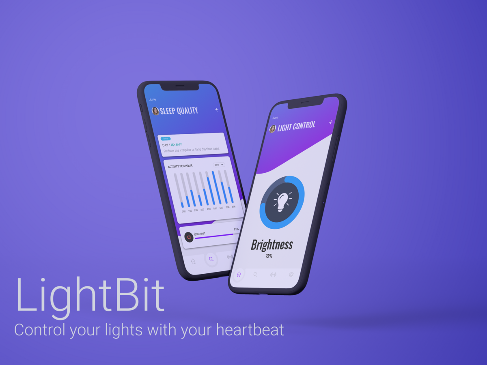
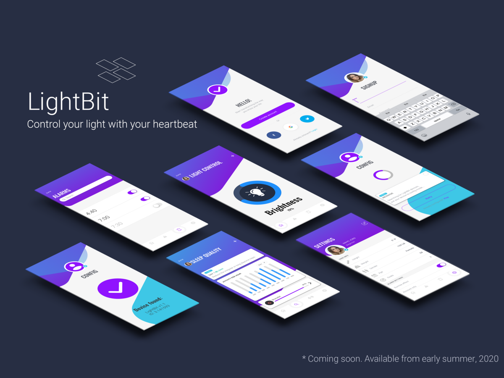

LightBit

Description
The goal of the project was to design a mobile application that can control the light intensity of a smart light bulb based on the user's preferences and biological clock.
By monitoring the user's daily routine, the application can adjust the light intensity to help the user wake up in the morning and fall asleep in the evening. The application also provides a manual control option for the user to adjust the light intensity based on their current needs.
Design


Tools
- InVision
- Photoshop
- Lightroom
- Illustrator